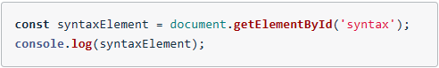
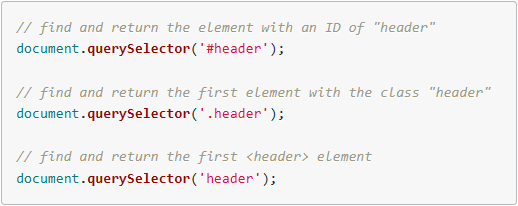

The DOM stands for Document Object Model. It is a tree structure that captures the content and properties of the HTML and the relationships between each Node. The DOM is the full parse representation of the HTML.
When requesting a website, regardless of the backend, it will respond with HTML. This response based on HTML spec which contains specific set of rules for how broswers should process recieved data.
DOM/HTML Process order:
The browser receives a steram of HTML. The bytes are ran through a complex (but fully documented) parsing process that determines the different characters (The start tag character <, an attribute like href and a closing angle bracked like >). After parsing takes place, a process called tokenization begins. Tokenization takes one character at a time and builds up tokens:
The DOM is a model (representation) of the relationships and attributes of the HTML doc that was received.
Remember that a JavaScript object is a tree-like structure that has properties and values.
The DOM can be accessed using a special object provided the the browser: documnt
The document object is provided by the browser and is a representation of the HTML doc.
The object is NOT provided by the JavaScript. It only references the DOM in one place, in its "Global Object" section:
In addition to the properties defined in this specification, the global object may have additional host defined properties.
This may include a property whose value is the global object itself; for example, in the HTML DOM, the window property of the global object is the global object itself.
(source)
Basically, this says the document object is not part of JS, but is expected to already exist and be freely accessible to JS code.
The DOM is standardized by W3C. There are a number of specs that makeup the DOM; here are a few:
See the full list of DOM specs here: https://www.w3.org/TR/?tags[0]=dom#w3c_all
Given the document object is an object, just like a JavaScript object, this means it has key/value pairs. Some values are just pieces of data, while others are functions (also known as methods That provide some type of functionality.
document.getElementById();
To utalize the code, we need to pass a string of the ID of the desired element and return:
document.getElementById('footer');
Note that the footer inside the method does not contain a #.
By the method name, getElementById, it knows it's searching for an ID.
We can store an element inside a variable. In the console, we could example this:
By storing the element in a variable, we can then access/reference that element in our JavaScript code.
document.getElementById() will only ever return at most one element.
Similar to CSS, JavaScript pulls elements by their selector.
Note:
.getElementById() does NOT have an "s" in Element.
.getElementsByClass() and .getElementsByTagName() bot DO have an "s" in Elements
The slected page element(s) will NOT work if there is a typo missing or adding the "s" where it does or does not belong.
The difference between "Node" and "node":
So the Node Interface is a blueprint for all of the properties (data) and methods (functionality) that every real node has after it's been created.
Now, the Node Interface has a lot of properties and methods, but it's not very specific...I mean, what is a node???
Just like "blueprint for a Building" is not as specific as "blueprint for a house" or "blueprint for a skyscraper".
These are more-specific blueprints.
And these more-specific blueprints would probably have their own properties and methods that are specific to just houses or just skyscrapers.
Just like the Node Interface, the Element Interface is a blueprint for creating elements
Since Element is pointing at Node, this indicates that the Element Interface inherits all of the Node Interface's properties and methods. This means that any element (lowercase "e") that was created from the Element Interface is also a decendent from the Node Interface... Which means the element is also a node (lowercase "e" and "n").
Just like the Node Interface, every Element has access to every property and method on the MDN Element page
View all Interfaces on the Web API Interfaces page
Notice:
This means that any HTML element inherits all of the properties and methods from Element and Node
In addition, HTML Element has its own properties and methods.
There are many different interfaces with a lot of different properties and methods on the Web API Interfaces
A couple of specific interfaces:
Both of these interfaces have properties and methods.
The Element Interface inherits all of the properties and methods from the Node Interface.
There are a lot of other interfaces that can be accessed in JavaScript. Many of these interfaces inherit from other interfaces, which means that they share the properties and methods of their ancestor interfaces.
Before, browsers didn't have a specific standard they all met. You had to write code different for each browser. Then you had to write code to determine which browser was being used. Because of this, many libraries with specific functionalies came along. jQuery Quickly became popular. One of the jQuery library's main purposes was to abstract the way the differences between browsers. Now, every browser has started supporting an official standard and jQuer's methods have been replaced by native DOM methods and new DOM methods were created.
.querySelector() method is used to select elements just like CSS. We pass a string that's just like a CSS selector into the .querySelector
MDN - Document: querySelector() Method
The .querySelector() method only returns ONE element. This makes sense if you use it in the console to search for an element by ID; However, even though .getElementsByClassName() and .getElementsByTagName() both return a list of multiple elements, using .querySelector() with a class selector or a tag selector will still only return the FIRST item it finds.
.querySelectorAll() is the method that will get a list of all elements with a certain class or all of one type of element.
MDN Document: querySelectorAll() method
MDN NodeList